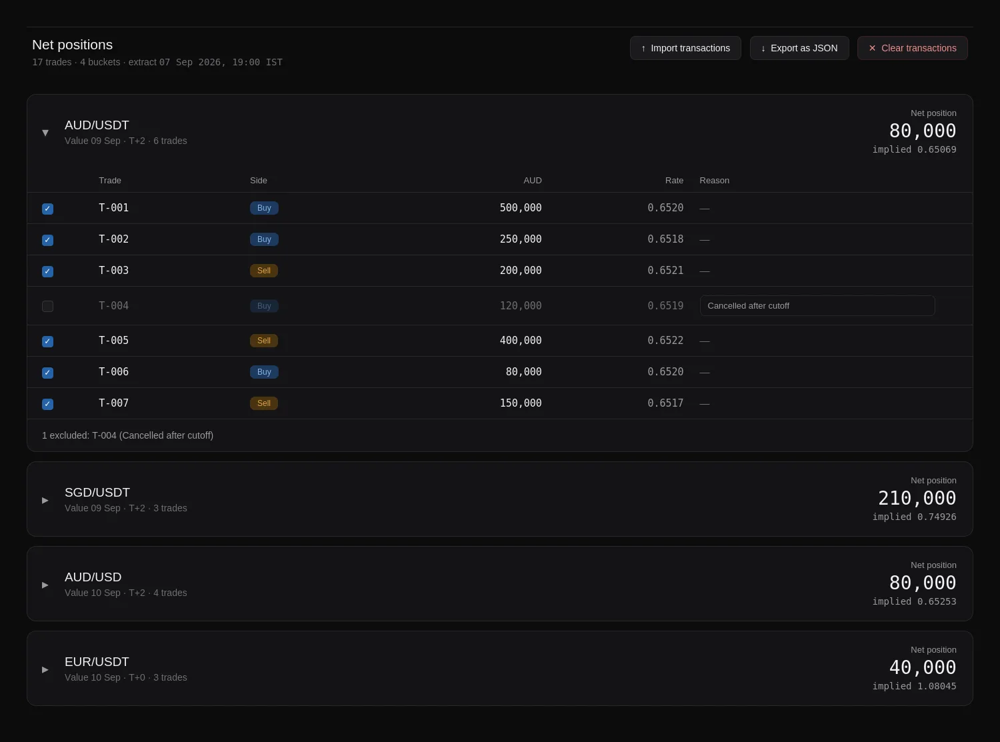
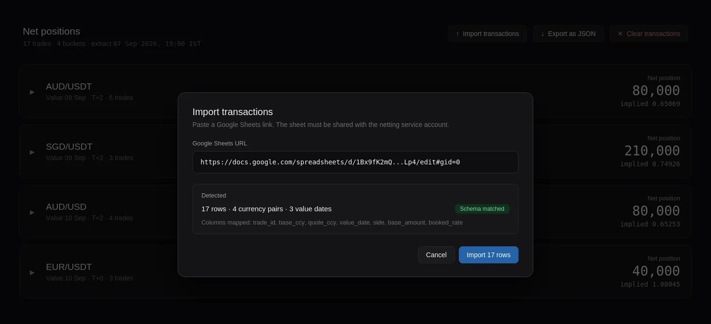
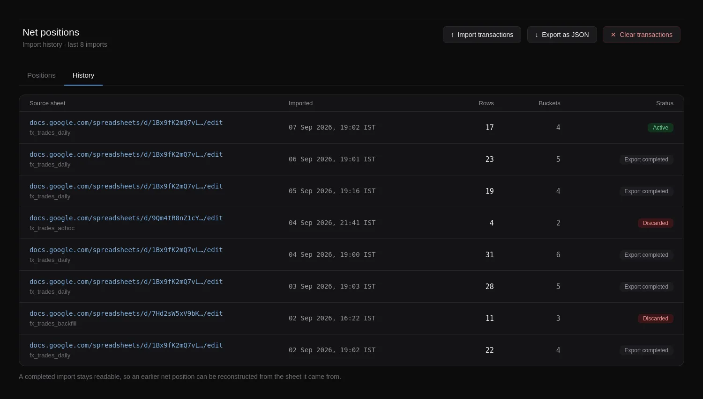

AI work · Built with code · Finmo
FX Netting Dashboard
A stopgap I built with Claude Code and shipped in days, while engineering worked on the long-term netting engine.


The problem
Finmo's treasury and FinOps teams sent every FX trade to a liquidity provider, even when opposing trades in the same currency pair could cancel each other out. Finding those pairs meant filtering hundreds of rows by hand every day. The team lost hours, and the company paid charges it didn't need to.
What I built
Engineering was still designing a proper netting engine. Rather than wait, I used Claude Code to build a dashboard on top of the existing daily extract. It groups trades into buckets and shows every net position in one place.
The scale
Each day's extract held 500 to 600 transactions across several currency pairs and value dates. Netting the opposing ones internally saved about $400–500 a day, roughly $10–15K a month, on top of the hours FinOps no longer spent filtering by hand.
It never writes to the production database. That's what made it safe to ship fast.
How it works
- Download the extractFinOps pulls the day's transactions from the back-office admin portal.
Person - Upload it to the toolThe tool checks the columns match before loading any rows.
Person - The tool groups opposing tradesTrades are bucketed by currency pair and value date, with the net position for each.
AI - FinOps picks what to netThey export a JSON of the netted trades plus the residual amount that wasn't netted.
Expert decides - The JSON goes back to the back officeIt updates transaction statuses and creates new line items for the residual trades.
System
Every exclusion has a reason
A trade can be left out of a bucket, but only with a note like "Cancelled after cutoff". Anyone can see why later.
Check the input first
The import confirms the columns before loading rows, so bad data is caught before anything is calculated.
Hand off a file
The tool exports JSON that the existing back office already knew how to read, which kept it out of the critical path.
The tool, step by step
A look inside

Dummy data. The live tool sat on Finmo's internal domain.
Commission Analytics Agent → Read it